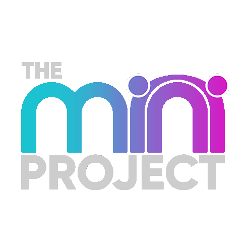

Warning in readLines(input_file): incomplete final line found on 'index.qmd'¿Qué es Git?

Git es un sistema de control de versiones distribuido que permite a los desarrolladores rastrear cambios en el código, colaborar en proyectos y mantener un historial completo de modificaciones. Es esencial en el desarrollo de software moderno, ya que facilita la colaboración y asegura la integridad del trabajo realizado.
Ventajas de Usar Git:
- Control de Versiones: Permite rastrear todos los cambios en los archivos y revertirlos si es necesario.
- Colaboración: Facilita que múltiples personas trabajen en el mismo proyecto sin sobrescribir el trabajo de los demás.
- Historial Completo: Conserva un registro detallado de los cambios realizados en el proyecto, lo que facilita la revisión y auditoría.
Comandos Básicos de Git
A continuación, se presentan algunos comandos esenciales para comenzar a trabajar con Git:
-
Configurar Git por Primera Vez:
Configura tu nombre y correo electrónico, que se utilizarán en los commits:
git config --global user.name "Tu Nombre" git config --global user.email "tu_correo@example.com" -
Inicializar un Repositorio Git:
Crea un nuevo repositorio Git en una carpeta:
git init -
Verificar el Estado del Repositorio:
Muestra los cambios en el repositorio:
git status -
Añadir Archivos al Área de Preparación (Staging):
Prepara los archivos para el próximo commit:
git add nombre_archivo # O para agregar todos los archivos modificados git add . -
Crear un Commit:
Guarda los cambios en el historial de Git con un mensaje descriptivo:
git commit -m "Mensaje del commit" -
Ver el Historial de Commits:
Muestra el historial de cambios realizados:
git log -
Conectar un Repositorio Local con un Repositorio Remoto:
Enlaza tu proyecto local con un servicio como GitHub:
git remote add origin URL_DEL_REPOSITORIO -
Subir Cambios al Repositorio Remoto:
Envía tus commits al repositorio remoto:
git push -u origin main
Referencias
¿Qué es GitHub?

GitHub es una plataforma en la nube que permite a desarrolladores y equipos alojar repositorios Git, gestionar proyectos de manera eficiente y colaborar en tiempo real. Es una de las herramientas más populares en el mundo del desarrollo de software, ya que combina las ventajas de Git con características adicionales para mejorar la productividad y la colaboración.
Además de almacenar código, GitHub ofrece funcionalidades que simplifican la organización y el flujo de trabajo en los proyectos, tales como:
- Control de versiones centralizado: Permite a los equipos trabajar simultáneamente sin conflictos.
- Herramientas de comunicación: Como issues y pull requests para coordinar tareas y discutir cambios.
- Integraciones y automatizaciones: Compatibilidad con herramientas de CI/CD como GitHub Actions para automatizar pruebas, despliegues y más.
Conceptos Básicos
Repositorio: Es el núcleo de GitHub. Almacena todo tu proyecto, incluyendo el código fuente, documentación y el historial de cambios. Los repositorios pueden ser públicos (visibles para todos) o privados (acceso restringido a ciertos usuarios).
Ramas (Branches): Permiten trabajar en diferentes versiones o características del proyecto de manera independiente. Por ejemplo, puedes crear una rama para desarrollar una nueva funcionalidad sin afectar el código principal.
Commits: Son puntos de control en el historial del proyecto que registran los cambios realizados en los archivos. Cada commit incluye un mensaje descriptivo para entender qué se modificó y por qué.
Pull Requests (PR): Se utilizan para proponer cambios en una rama y discutirlos antes de integrarlos en otra rama, como la rama principal (
mainomaster). Los PR son esenciales para mantener un flujo de trabajo organizado en equipos.Issues: Son una herramienta para rastrear tareas, errores o sugerencias en un proyecto. Los issues se pueden categorizar y asignar a diferentes miembros del equipo.
Forks: Permiten crear una copia independiente de un repositorio para realizar cambios sin afectar el proyecto original. Es ideal para colaborar en proyectos de código abierto.
Colaboración: GitHub facilita el trabajo en equipo al permitir contribuciones de múltiples desarrolladores, tanto en proyectos públicos como privados. Las herramientas de revisión de código ayudan a mantener estándares de calidad.
Wiki y Páginas de GitHub: Los repositorios pueden incluir una wiki para documentar el proyecto y GitHub Pages para crear sitios web estáticos directamente desde el repositorio.
Referencias
-
GitHub
- Documentación Oficial de GitHub
- GitHub Learning Lab – Aprende GitHub de forma interactiva con ejercicios prácticos.
¿Qué es Google Colab?

Google Colab es una plataforma basada en la nube que permite a los usuarios escribir, ejecutar y compartir código en Python a través de un entorno Jupyter Notebook. Es ampliamente utilizada en ciencia de datos, aprendizaje automático y enseñanza debido a su facilidad de uso y acceso gratuito.
Ventajas de Usar Google Colab:
- Acceso Gratuito a Recursos de Cómputo: Incluye acceso a GPU y TPU para proyectos que requieren gran capacidad de cálculo.
- Colaboración en Tiempo Real: Similar a Google Docs, permite a múltiples usuarios trabajar simultáneamente en el mismo notebook.
- Sin Instalaciones: Funciona completamente en el navegador, eliminando la necesidad de configurar Python localmente.
- Integración con Google Drive: Facilita guardar y cargar archivos directamente desde tu almacenamiento en la nube.
Características Principales
-
Soporte para Python: Ejecución de código Python con bibliotecas preinstaladas como
pandas,numpy,matplotlib, y más. - Visualizaciones: Permite generar gráficos interactivos y visualizaciones avanzadas.
- Conexión a Repositorios: Compatible con Git para clonar y trabajar con proyectos directamente desde la plataforma.
Primeros Pasos
-
Crear un Nuevo Notebook:
- Accede a Google Colab.
- Haz clic en “Archivo” → “Nuevo notebook”.
-
Conectar a un Entorno de Ejecución:
Haz clic en el botón “Conectar” para vincular tu notebook con un entorno en la nube.
-
Ejecutar Código en una Celda:
Escribe tu código Python en una celda y presiona
Shift + Enterpara ejecutarlo.print("¡Hola, Google Colab!") -
Subir Archivos desde tu Computadora:
Usa la siguiente celda para cargar archivos al entorno:
from google.colab import files uploaded = files.upload() -
Montar Google Drive:
Conecta tu Google Drive para guardar o cargar archivos:
from google.colab import drive drive.mount('/content/drive') -
Instalar Bibliotecas Adicionales:
Usa
pippara instalar cualquier biblioteca necesaria:!pip install nombre_libreria
Referencias
Mini Proyecto

Descripción
Realiza un análisis de las calificaciones de un grupo de estudiantes para evaluar su desempeño académico, aplicando los siguientes conceptos: - Creación de entornos virtuales. - Uso de Git y GitHub para control de versiones. - Visualización de datos con Matplotlib. - Colaboración en la nube utilizando Google Colab.
Requerimientos
-
Crea un Proyecto en GitHub:
Inicia sesión en GitHub y crea un nuevo repositorio llamado
proyecto_calificaciones.-
En la configuración del repositorio:
- Asegúrate de incluir un archivo
README.mdpara describir el proyecto. - Opcionalmente, agrega un archivo
.gitignorepara Python desde las plantillas predefinidas de GitHub.
- Asegúrate de incluir un archivo
Copia la URL del repositorio (por ejemplo,
https://github.com/TU_USUARIO/proyecto_calificaciones.git).-
En tu terminal, clona el repositorio a tu máquina local:
git clone https://github.com/TU_USUARIO/proyecto_calificaciones.git cd proyecto_calificaciones
-
Crea un Entorno Virtual:
- Crea un entorno virtual llamado
entorno_calificaciones. - Instala las librerías
pandasymatplotlib.
- Crea un entorno virtual llamado
-
Carga los Datos de Calificaciones:
-
Dentro de la carpeta clonada, crea un archivo CSV llamado
calificaciones_estudiantes.csvcon los siguientes datos:Estudiante,Asignatura,Calificacion Juan,Matemáticas,85 María,Ciencias,90 Pedro,Historia,75 Ana,Matemáticas,95 Luis,Ciencias,88 Clara,Historia,70 Carlos,Matemáticas,80
-
-
Desarrolla un Archivo Python para el Análisis:
Archivo:
analisis_calificaciones.py.-
Tareas:
- Calcular el promedio de calificaciones por asignatura.
- Crear un gráfico de barras mostrando los promedios por asignatura.
- Guardar el gráfico como una imagen (PNG).
-
Asegúrate de hacer commits con mensajes descriptivos después de completar cada tarea:
git add . git commit -m "Añadir análisis inicial de calificaciones" -
Código de ejemplo:
import pandas as pd import matplotlib.pyplot as plt # 1. Cargar los datos desde el archivo CSV df = pd.read_csv('calificaciones_estudiantes.csv') # 2. Calcular el promedio de calificaciones por asignatura promedio_asignatura = df.groupby('Asignatura')['Calificacion'].mean() # 3. Mostrar los resultados en la consola print("Promedio de calificaciones por asignatura:") print(promedio_asignatura) # 4. Crear un gráfico de barras plt.figure(figsize=(8, 6)) # Configurar el tamaño de la figura promedio_asignatura.plot(kind='bar', color='skyblue', edgecolor='black') # Configurar etiquetas y título del gráfico plt.title('Promedio de Calificaciones por Asignatura', fontsize=16) plt.xlabel('Asignatura', fontsize=14) plt.ylabel('Calificación Promedio', fontsize=14) # Guardar el gráfico como imagen PNG plt.savefig('grafico_promedios.png') # Mostrar el gráfico en pantalla plt.show()
-
Sube el Proyecto a GitHub:
-
Una vez que completes las tareas, sube los cambios al repositorio remoto:
git push origin main
-
-
Desarrolla Parte del Proyecto en Google Colab:
- Carga los datos desde el archivo CSV y repite el análisis en un cuaderno de Google Colab.
- Guarda el cuaderno en Google Drive y comparte el enlace.
Entrega del Proyecto
- GitHub: Sube el repositorio completo con el archivo CSV, el script Python y el gráfico generado.
- Google Colab: Comparte el enlace al cuaderno colaborativo donde desarrollaste parte del análisis.
Solución Mini Proyecto

- Esta solución se desarrollará utilizando Visual Studio Code.
- Asegúrate de tener instalado Git (o Git Bash).
- Necesitas una cuenta en GitHub.
1. Crea un Proyecto en GitHub
-
Inicia sesión en GitHub y crea un nuevo repositorio llamado
proyecto_calificaciones.Incluye un archivo
README.mdcon una breve descripción del proyecto.-
Añade un archivo
.gitignorepara Python desde las plantillas predefinidas de GitHub.
-
Copia la URL del repositorio creado (por ejemplo:
https://github.com/TU_USUARIO/proyecto_calificaciones.git). -
Clona el repositorio a tu máquina local:
git clone https://github.com/TU_USUARIO/proyecto_calificaciones.git cd proyecto_calificaciones
{kind=link}
{kind=link}
2. Crea un Entorno Virtual
Abre tu terminal o consola.
Navega a la carpeta donde deseas trabajar.
-
Entorno virtual
-
Crea un entorno virtual llamado
entorno_calificaciones:python -m venv entorno_calificaciones -
Activa el entorno virtual:
-
Windows:
entorno_calificaciones\Scripts\activate -
Linux/Mac:
source entorno_calificaciones/bin/activate
-
-
-
Crea un archivo
requirements.txtdentro de tu carpeta de proyecto con el siguiente contenido:pandas matplotlib
-
Instala las librerías desde el archivo
requirements.txt:pip install -r requirements.txt
{kind=link}
{kind=link}
3. Carga los Datos de Calificaciones
-
Dentro de la carpeta clonada, crea un archivo CSV llamado
calificaciones_estudiantes.csvcon el siguiente contenido:Estudiante,Asignatura,Calificacion Juan,Matemáticas,85 María,Ciencias,90 Pedro,Historia,75 Ana,Matemáticas,95 Luis,Ciencias,88 Clara,Historia,70 Carlos,Matemáticas,80
{kind=link}
4. Desarrolla un Archivo Python para el Análisis
-
Crea un archivo llamado
analisis_calificaciones.pyen la carpeta del proyecto con el siguiente contenido:import pandas as pd import matplotlib.pyplot as plt # 1. Cargar los datos desde el archivo CSV df = pd.read_csv('calificaciones_estudiantes.csv') # 2. Calcular el promedio de calificaciones por asignatura promedio_asignatura = df.groupby('Asignatura')['Calificacion'].mean() # 3. Mostrar los resultados en la consola print("Promedio de calificaciones por asignatura:") print(promedio_asignatura) # 4. Crear un gráfico de barras plt.figure(figsize=(8, 6)) # Configurar el tamaño de la figura promedio_asignatura.plot(kind='bar', color='skyblue', edgecolor='black') # Configurar etiquetas y título del gráfico plt.title('Promedio de Calificaciones por Asignatura', fontsize=16) plt.xlabel('Asignatura', fontsize=14) plt.ylabel('Calificación Promedio', fontsize=14) # Guardar el gráfico como imagen PNG plt.savefig('grafico_promedios.png') # Mostrar el gráfico en pantalla plt.show() -
Ejecuta el script en tu terminal para verificar que funciona:
python analisis_calificaciones.py -
Haz commits con los cambios:
git add . git commit -m "Añadir análisis inicial de calificaciones"
{kind=link}
{kind=link}
{kind=link}
5. Subir el Proyecto a GitHub
-
Sube los cambios al repositorio remoto en GitHub:
git push origin main
6. Desarrolla Parte del Proyecto en Google Colab
Abre Google Colab.
Carga el archivo
calificaciones_estudiantes.csvdesde tu máquina local.-
Realiza el mismo análisis utilizando el código del archivo
analisis_calificaciones.py. -
Guarda el cuaderno y comparte el enlace.
{kind=link}
{kind=link}
7. Entrega del Proyecto
Estructura Final del Proyecto
Después de seguir todos los pasos, tu proyecto tendrá la siguiente estructura:
proyecto_calificaciones/
├── entorno_calificaciones/ # Carpeta del entorno virtual (excluida por .gitignore)
├── calificaciones_estudiantes.csv # Archivo de datos
├── analisis_calificaciones.py # Script Python para el análisis
├── grafico_promedios.png # Gráfico generado por el script (se generará al ejecutar el script)
├── README.md # Descripción del proyecto
├── requirements.txt # Dependencias del proyecto
└── .gitignore # Configuración para excluir archivos no deseadosEntrega del Proyecto:
Conclusiones
En este recorrido, exploramos herramientas clave para el desarrollo y análisis de proyectos:
- Git: Brinda control de versiones, permitiendo rastrear y revertir cambios, esencial para trabajar en equipo.
- GitHub: Amplía las capacidades de Git con herramientas para colaboración, gestión de tareas y automatización.
- Google Colab: Proporciona un entorno en la nube para ejecutar código Python con acceso gratuito a recursos avanzados, como GPUs, ideal para proyectos colaborativos.
Sobre el Proyecto
El proyecto desarrollado aplicó estas herramientas en un análisis de calificaciones de estudiantes. Utilizamos Git para controlar versiones, GitHub para alojar el código y Google Colab para realizar análisis y visualizaciones en un entorno colaborativo. Esto permitió integrar habilidades prácticas de programación, gestión de proyectos y análisis de datos en un contexto real, destacando la importancia de estas tecnologías en la resolución de problemas.